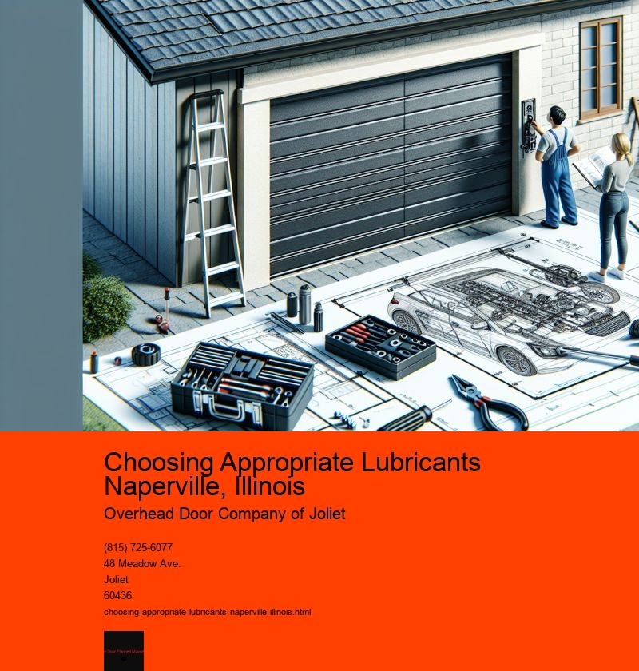

Choosing the right lubricant is an often-overlooked yet essential aspect of maintaining machinery, vehicles, and even household items. In Naperville, Illinois, a city known for its vibrant community and thriving industries, the importance of selecting appropriate lubricants cannot be understated. Whether for industrial applications or personal use, the right lubricant ensures longevity, efficiency, and reliability. This essay delves into the factors to consider when choosing lubricants in Naperville, emphasizing the unique needs of the area and the benefits of informed decision-making.
Naperville, with its diverse climate and bustling economic activities, presents a unique set of challenges and opportunities for lubricant selection. The city experiences a wide range of temperatures throughout the year, from hot summers to frigid winters. These temperature fluctuations can affect the viscosity and performance of lubricants, making it crucial to choose products that can withstand such variations. For instance, in colder months, a lubricant with low-temperature fluidity is essential to ensure that engines and machinery start smoothly without excessive wear.
When considering lubricants for industrial applications in Naperville, the focus should be on products that enhance equipment efficiency and reduce downtime. Industrial sectors, such as manufacturing and logistics, are cornerstones of the local economy. These industries rely heavily on machinery that must operate at peak performance levels. High-quality lubricants that provide excellent thermal stability and oxidation resistance can significantly extend the lifespan of equipment, reduce maintenance costs, and improve overall operational efficiency.
For personal vehicles, the residents of Naperville should prioritize lubricants that enhance engine performance and fuel efficiency. Given the citys suburban nature, many residents commute to Chicago or other surrounding areas for work. This frequent travel necessitates lubricants that not only protect engines from wear and tear but also contribute to better fuel economy. Synthetic oils, known for their superior performance in various conditions, may offer the best solution for such needs.
Additionally, environmental considerations are becoming increasingly important in lubricant selection. Naperville, like many communities, is becoming more conscious of sustainability and environmental impact. Biodegradable and eco-friendly lubricants are gaining popularity as they reduce the carbon footprint and minimize potential environmental hazards. Choosing such products aligns with global sustainability goals and reflects a commitment to environmental stewardship.
Informed decision-making in lubricant selection also involves understanding the specific requirements of the equipment or vehicle. Consulting manufacturer guidelines and speaking with local experts can provide valuable insights. Local automotive and industrial supply stores in Naperville often have knowledgeable staff who can recommend products based on specific needs and conditions. Furthermore, attending workshops or seminars on lubrication can equip individuals and businesses with the knowledge needed to make the best choices.
In conclusion, choosing appropriate lubricants in Naperville, Illinois, involves a careful consideration of several factors, including climate conditions, application requirements, and environmental impact. Whether for industrial machinery or personal vehicles, the right lubricant can significantly enhance performance and longevity. By prioritizing quality, efficiency, and sustainability, residents and businesses in Naperville can ensure they are making informed and responsible choices. As the city continues to grow and evolve, so too should the approaches to machinery and vehicle maintenance, with lubricant selection playing a pivotal role in this ongoing process.
Lubricating Hinges and Rollers Naperville, Illinois
